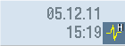

HMI Trace erzeugen
Für eine erweiterte Diagnose der Bedien-Software steht die Funktion "HMI Trace" zur Verfügung. Voraussetzung ist mindestens Zugriffsstufe 3 (Anwender).
Vorgehensweise, um eine HMI Trace-Datei zu erzeugen:
-
Ein Experte des Service & Support Centers stellt Ihnen eine Datei sltrc_keybitset.ini zur Verfügung. Kopieren Sie die Datei sltrc_keybitset.ini auf ein USB-Speichermedium und lesen Sie die Datei an der Steuerung oder Bedientafel ein.
-
Wählen Sie im Bedienbereich "Inbetriebnahme" → "HMI" → "Diagnose" → "HMI Trace" an.
-
Wählen Sie mit dem Softkey "Konfiguration laden" die ini-Datei auf dem USB-Speichermedium aus.
-
Starten Sie den Trace durch Aktivieren des Kontrollkästchens oder von einer beliebigen Stelle an der Bedienoberfläche mit folgender Tastenkombination:
<ALT> + <T> an der Bedientafel
<ALT> + <Shift> + <T> auf einer externen Tastatur
Als Rückmeldung, dass gerade ein Trace aktiv ist, wird oben rechts in der Kopfzeile folgendes Symbol angezeigt:

-
Wiederholen Sie an der Bedienoberfläche die Bedienfolge, deren Ursache geklärt werden soll.
-
Stoppen Sie den Trace durch Deaktivieren des Kontrollkästchens oder von einer beliebigen Stelle an der Bedienoberfläche mit folgender Tastenkombination:
<CTRL> + <T> an der Bedientafel
<CTRL> + <Shift> + <T> auf einer externen Tastatur
-
Es wird eine Ausgabedatei sltrc.out erzeugt, die Sie mit dem Softkey "Daten exportieren" auf das Speichermedium kopieren.
-
Schicken Sie die Datei sltrc.out zur Analyse zurück an das Service & Support Center.
|
|
Hinweis
|
|
Nach Abschluss der Analyse wird empfohlen, alle Dateien unter folgendem Pfad zu löschen: ../user/sinumerik/hmi/log/sltrc
|
|
Hinweis
|
Softkey "Erweitert"
Die weiteren Optionen in diesem Dialog unterstützen qualifiziertes Servicepersonal bei der Analyse des Systems und der Auswertung des HMI Trace.
|